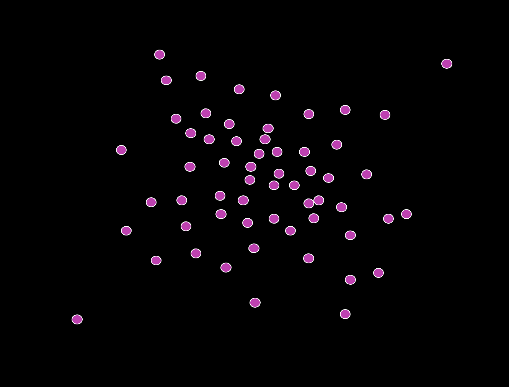
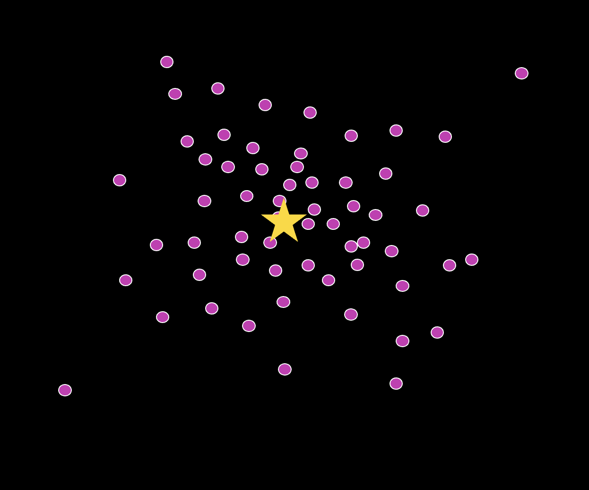
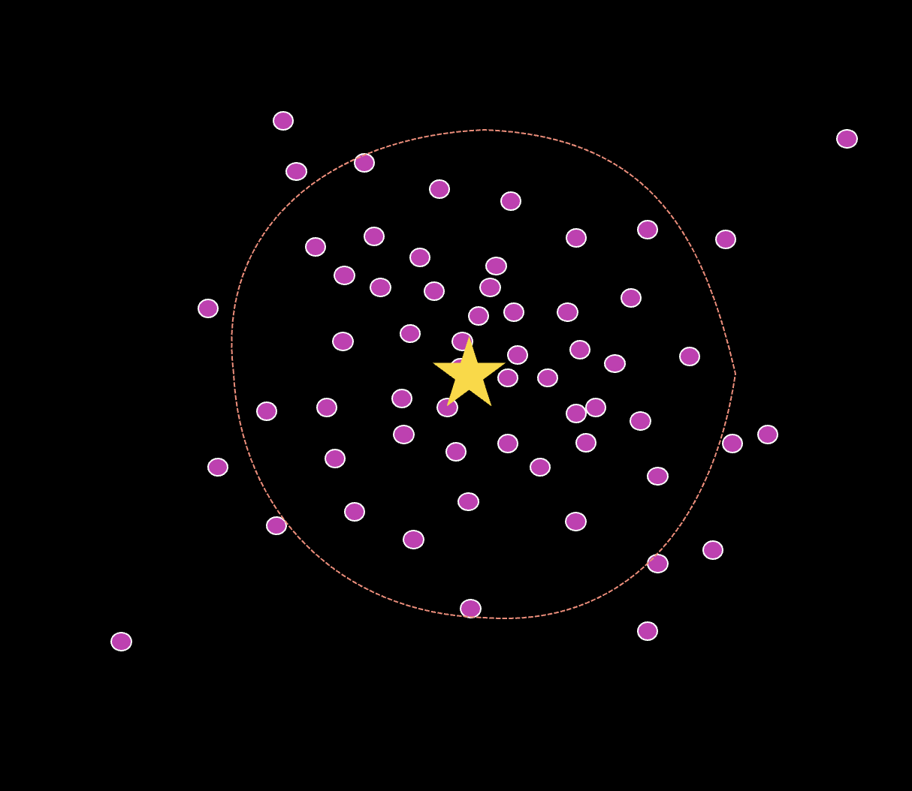
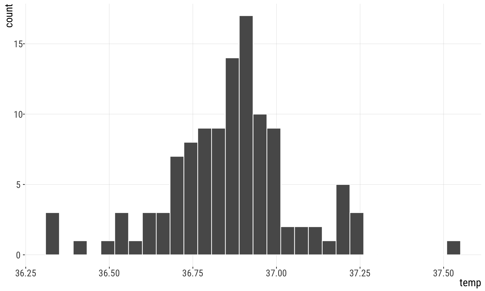
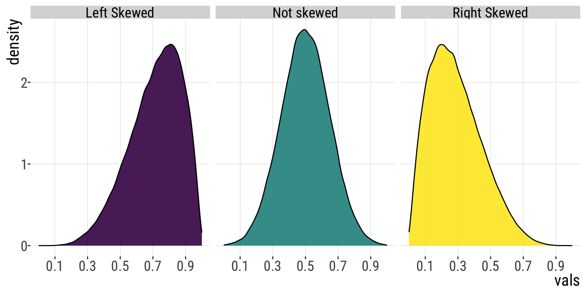

Show the code
[1] 10.72727Show the code
[1] 10.72727[1] 12 [1] 1 5 6 9 10 12 13 14 15 16 17[1] 122.1.Descriptive statistics (central tendency)
September 9, 2026
Or summary statistics: quantities that capture important features of frequency distributions
Location (central tendency)
Width (spread)
Association (correlation)


A measure of center (or location) of our data: ⭐
A measure of spread (or width) of our data (red).

Mean
Median
Mode
“Average” is sometimes used synonymously with mean. But: medians and even modes are sometimes called an “average”
Let’s be precise (pun intended):
When you see the word, “average”, pay attention to which measure of location it describes.
Here, let’s be stats pro, and refer to mean, median, mode, etc.
The sum of values divided by the sample size.
\[\bar{Y}=\frac{\sum_{i=1}^{n}Y_{i}}{n}\]
The mean of the set of 11 numbers: \(1, 15,9, 16,6, 17, 10, 5, 12, 14, 13\)
\[\bar{Y}=\frac{\sum_{i=1}^{n}Y_{i}}{n}\]
\(\bar{Y} = (1+15+9+16+6+17+10+5+12+14+13)/11 =\) 10.7272727
The middle measurement.
Calculate the median by taking the value halfway through an ordered list of observations.
First, order the numbers: 1, 5, 6, 9, 10, 12, 13, 14, 15, 16, 17
The \((n + 1) / 2\)-th value for odd sized samples:
1 5 6 9 10 12 13 14 15 16 17
Sample size is even: Mean of \(n/2\)-th and the \((n + 2) / 2\)-th values.
1 5 6 9 10 [12 13] 14 15 16 17 17
mean of 12 and 13 is (12+13)/2=12.5
[1] 10.72727[1] 10.72727[1] 12 [1] 1 5 6 9 10 12 13 14 15 16 17[1] 12Mathematically convenient.
Simply the sum of all observations divided by the sample size.
Better descriptor for skewed population distributions (less affected by outliers).
The median is the middle measurement.
The mean and median become the same when data are symmetric.
The most common value observed in a sample.
easy to pick
always a real value in the data
applicable to non-numerical variables!

Histograms reveal measures of center
First step: plot your data
Left: Asymmetric Few small values. \(>1/2\) of values exceed the mean.
Middle: Symmetric As many large as small values. \(\sim1/2\) of values exceed the mean.
Right: Asymmetric Few large values. \(>1/2\) of values are less than the mean.

Measures of spread (width):
range
q-quantiles, interquartile range
Variance
Standard deviation
Coefficient of variation
Yaniv Brandvain; Freeman & Company; and Michael Whitlock for some materials used in these slides.
B215